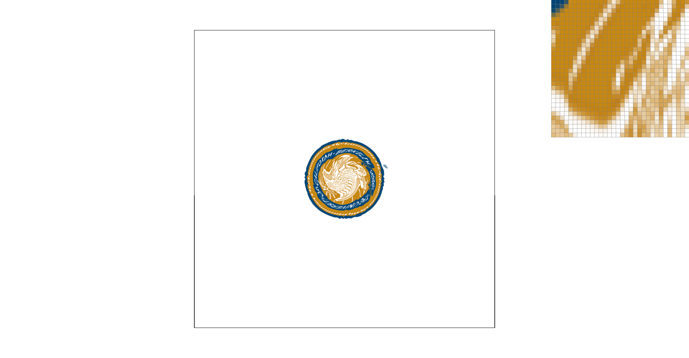

Nearest Level Sampling, Nearest Pixel Sampling

To begin with I implemented a rudimentary rasterization algorithm using a sampling method. The only method used to speed up the algorithm was a bounding box around the triangle to limit the sampling only to roughly where the triangle is.
In order to optimize this, I attempted to implement rasterization via the Bresenham Algorithm (as described here). The main idea of this algorithm is to split each triangle into a top and bottom half then use two instances of the Bresenham Algorithm for line drawing in order to scan lines across the triangle to build it up. This implementation, while not perfect, was successful in its main goal of optimization. Here are my results:
(Note some of these images use the supersampling I will cover in the next section in order to emphasize the time difference between the two algorithms)
Cube (Num Triangles: 6, Super Sample Rate: 1)
Standard Rasterizer
Average Render Time: 0.156962 seconds
Fast Rasterizer
Average Render Time: 0.1557911 seconds
Improvement: 1.39%
Cube (Num Triangles: 6, Super Sample Rate: 16)
Standard Rasterizer
Average Render Time: 0.4846569 seconds
Fast Rasterizer
Average Render Time: 0.4425137 seconds
Improvement: 9.2766%
Degenerate Square (Num Triangles: 1000, Super Sample Rate: 1)
Standard Rasterizer
Average Render Time: 1.348856 seconds
Fast Rasterizer
Average Render Time: 0.1628616 seconds
Improvement: 728.22%
Degenerate Square (Num Triangles: 1000, Super Sample Rate: 16)
Standard Rasterizer
Average Render Time: 18.86615 seconds
Fast Rasterizer
Average Render Time: 0.5512954 seconds
Improvement: 3,322.15%
As you can see for simpler scenes the speed-up is minor, but as the scenes get more complex the effects of the optimization become more visible. In the nightmare scenario presented by the last image where the triangles are especially thin and long the bounding box algorithm really struggles, but the Bresenham Algorithm experiences very little slowdown compared to simpler scenes.
Unfortunately my implementation was not perfect. The main issue I had was with getting triangles to line up properly. Something about my implementation resulted in gaps between triangles at times, as can be seen in some of the images above.
The main idea for supersampling was to render to a higher resolution sample buffer and downsize that to the screen by simply averaging the pixels from the sample buffer. The purpose of supersampling is to solve the problems with aliasing and jaggies that come with the standard triangle rasterizer. The only modifications to the rasterization pipelines involved changing the rasterizer to modify the sample buffer, and adding a new step which averages the sample buffer in order to scale it down to the screen size. Running this with the triangle rasterization code from before I got the results below.
1 Sample Per Pixel
4 Samples Per Pixel
9 Samples Per Pixel
16 Samples Per Pixel
The higher sample counts smooth out the jagged edges found in the particularly sharp triangles. This is because the downsizing at the end of supersampling effectively cuts out high frequency changes from the image. These high frequency changes, like the harsh edge of a triangle can cause aliasing and other artifacts. By supersampling we filter out these high frequencies and leave only the smooth low frequencies.
That was a lot of words, here is a hand standing cube man made using transforms to control his body and limbs using a hierarchical structure.
Barycentric Coordinates are a way to represent a point's position within a triangle. The three values of the coordinate essentially store the weights of each triangle vertex. In order to calculate the cartesian coordinates, you simply take the weighted average of the three vertices using these weights.
In this example the weight for the left vertex is encoded as red, the closer to the corner a point gets, the more red that pixel will be. Likewise the top and right vertices are encoded as blue, and green respectively. The center of the triangle is gray, because it has equal distance to all 3 vertices.
These coordinates can be used to map textures to the triangle faces like I will show in the next section, or it can be used in the same way as this example to make larger gradients such as this.
In this task I implemented texture mapping. To do this I sampled each pixel to get it’s barycentric coordinates and used those to look up the corresponding color in a texture file. A question arises however when that texture look up does not land exactly on the center of a pixel. There are two common answers to this question. One is to simply find the closest pixel to the sample point and use that color entirely. This is called nearest sampling. This can cause the resulting image to look pixelated because there is a harsh cutoff from one pixel to the next. The other option is to take a weighted average of the nearby pixels. This solution is called bilinear sampling. This approach is great when we want to avoid the pixelated look caused by nearest sampling. Here are some examples of the two methods:
Nearest Pixel Sampling, 1 Sample Per Pixel
Nearest Pixel Sampling, 16 Samples Per Pixel
Bilinear Pixel Sampling, 1 Sample Per Pixel
Bilinear Pixel Sampling, 16 Sample Per Pixel
There will be the largest difference between nearest and bilinear sampling when there are a lot of high frequency changes in the image. Bilinear sampling serves a similar purpose to super sampling, but with reduced costs. It manages to blur out some of the high frequencies from the image to make it more pleasant on the eye.
Sometimes, a texture image is actually too high resolution for the size of triangle we are trying to draw it on. This can cause aliasing because the high resolution can create high frequency changes, which are not good. The solution to this problem is to create multiple levels of image resolution for the texture called mipmaps.
Level sampling adds another tool to our arsenal to fight the high frequencies of our image. Level sampling, pixel sampling, and super sampling each have their own pros and cons. Super sampling is incredibly versatile. It can solve both the jaggedness of edges for triangles, and the aliasing problems of image textures. Unfortunately, super sampling is incredibly slow. In order to supersample, the image must first be rendered at a higher resolution, drastically increasing the time to render a frame. Pixel and level sampling are a lot more efficient, as they do not require a high resolution render to work. Level sampling does sacrifice memory usage for the sake of runtime, having to store several levels of detail for each texture used in a project. And neither method can help with aliasing problems arising from geometry, only textures.
Here are some images showcasing the effects of level and pixel sampling. In order to better show the effects of the sampling methods, the image has been shrunk down to create some aliasing artifacts, especially around the fork.
0 Level Sampling, Nearest Pixel Sampling
0 Level Sampling, Bilinear Pixel Sampling
Nearest Level Sampling, Nearest Pixel Sampling
Nearest Level Sampling, Bilinear Pixel Sampling